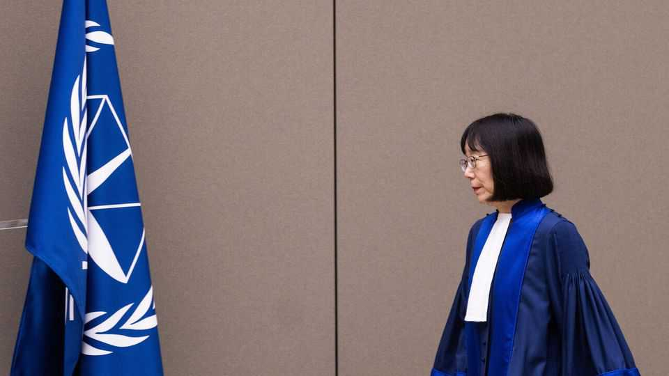

America’s attack on the International Criminal Court is a headache for Japan
It’s hard to support international law when your main ally wants to destroy it

Oct 22nd 2026
AKANE TOMOKO was on holiday back home in Japan when she learned that Russia wanted to arrest her. At the time, in 2023, Ms Akane was a judge at the International Criminal Court (ICC), which had recently issued an arrest warrant for Vladimir Putin. Russia was retaliating. But she wasn’t too fussed, she recalled in a book last year, after she had become the court’s president. What really worried her was a more existential danger: that sanctions might be imposed by America, which, like Russia, has never recognised the ICC’s jurisdiction. Several judges had already been put under American sanctions earlier that year. The worst-case scenario would be sanctions on the court itself, she wrote. “The ICC would essentially be shut down.”
That scenario is now coming true. On October 9th Marco Rubio, America’s secretary of state, announced the latest stage of a campaign to “dismantle the ICC, brick by brick”. The Trump administration says the ICC is threatening American sovereignty because it claims the power to investigate and prosecute American citizens for war crimes or crimes against humanity committed on ICC member states’ territory. The sanctions freeze ICC assets in America and block American firms and banks from engaging with the court. They will take effect after 180 days, a period during which Mr Rubio expects member states to rein in the court.
This puts Japan in a quandary. It is the largest funder of the ICC, contributing 15% of its budget. And for decades Japan has made the international rule of law a pillar of its foreign policy. But Japan also depends on America for its security; so the government was muted in its initial response when Ms Akane herself was put under sanction in August. Takaichi Sanae, the prime minister, said the sanctions were taihen zannen, “very regrettable”; but she pointedly did not call for their withdrawal.
Her careful wording sparked a backlash. Nakatani Gen, a former defence minister from Ms Takaichi’s party who now heads a cross-party group focused on human rights, accused her of being “docile and not saying what needs to be said at a crucial time”. In Nagoya, where Ms Akane taught law in 2005-08, her former students have gathered more than 174,000 signatures in her support. “It’s not idealism for Japan, it’s security,” says Shamoto Yosuke, one of them. “Japan cannot rely on military power alone to protect itself. That is why we need an international order based on rules, not just power.”
Since then Ms Takaichi has been bolder, calling the sanctions incompatible with Japanese policy. She raised the issue with Mr Trump in New York in September. After the latest sanctions, Japan signed a joint statement in support of the court with other ICC members, including all G7 countries bar America. Some suggest that Japan could discuss ICC reform over matters of jurisdiction to appease Mr Trump. But talk is unlikely to change his administration’s position. A better use of the 180 days, suggests Christopher Lamont of Tokyo International University, would be to plan how to keep the court running: by setting up funding that isn’t exposed to the American financial system, for instance.
This, though, could anger America further. Japan does not want to choose between two components of its security, one based on international law and the other on American protection. Regrettably, it is being pushed to do so. ■
For exclusive coverage of Asian politics, economics and security, sign up to Asia Bulletin, our weekly subscriber-only newsletter.